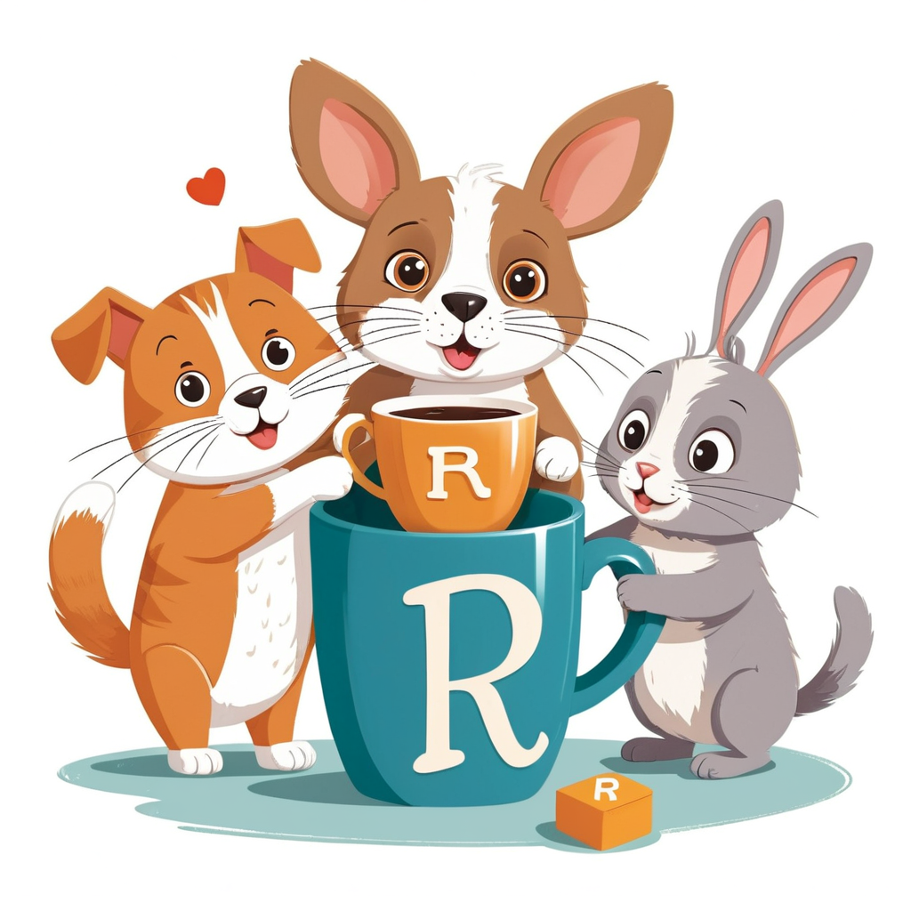

A Bayesian (B), Frequentist (F), and Machine Learner (ML) meet at a bar…
A Bayesian (B), Frequentist (F), and Machine Learner (ML) meet at a bar. What happened next none of them could have predicted…
A quation on stats.stackexchange was what are the differences between A Bayesian (B), Frequentist (F), and Machine Learner (ML). A detailed answer by Aaron NcdDid has caugt my attention.
It is an imaginary informal conversation between three practitionairs, illustrating the strenghts (and weeknesse) of each approach. When I was reading it for the first time, I could almost imagine myself joining the conversation. Here is my attempt to make it more accesible and attractive for others.
Background
On 2001, in a paper called ‘Statistical Modeling, the Two Cultures’, Leo Breiman termed two cultures 1.
“There are two cultures in the use of statistical modeling to reach conclusions from data. One assumes that the data are generated by a given stochastic data model.
The other, Machine Learning (ML) uses algorithmic models and treats the data mechanism as unknown”.
“Bayesian statistics is a theory in the field of statistics based on the Bayesian interpretation of probability, where probability expresses a degree of belief in an event” 2.
Still confuse? No worries. Please join a conversation between a Bayesian (B), Frequentist (F), and Machine Learner (ML)

ML: Hello, I am a Machine Learning practitioner.
B: Hello, I am a Bayesian practitioner.
F: Hello, I am a Frequentist practitioner.
ML: I hear you guys are good at stuff. Here’s some data.
F: Yes, let’s write down a model and then calculate the MLE.
B: Hey, F, that’s not what you told me yesterday! I had some univariate data and I wanted to estimate the variance, and I calculated the MLE. Then you pounced on me and told me to divide by 𝑛−1 instead of by 𝑛.
F: Ah yes, thanks for reminding me. I often think that I’m supposed to use the MLE for everything, but I’m interested in unbiased estimators and so on.
ML: Eh, what’s this philosophizing about? Will it help me?
F: OK, an estimator is a black box, you put data in and it gives you some numbers out. We frequentists don’t care about how the box was constructed, about what principles were used to design it. For example, I don’t know how to derive the ÷(𝑛−1) rule.
ML: So, what do you care about?
F: Evaluation.
ML: I like the sound of that.
F: A black box is a black box. If somebody claims a particular estimator is an unbiased estimator for 𝜃, then we try many values of 𝜃 in turn, generate many samples from each based on some assumed model, push them through the estimator, and find the average estimated 𝜃. If we can prove that the expected estimate equals the true value, for all values, then we say it’s unbiased.
ML: Sounds great! It sounds like frequentists are pragmatic people. You judge each black box by its results. Evaluation is key.
F: Indeed! I understand you guys take a similar approach. Cross-validation, or something? But that sounds messy to me.
ML: Messy?
F: The idea of testing your estimator on real data seems dangerous to me. The empirical data you use might have all sorts of problems with it, and might not behave according the model we agreed upon for evaluation.
ML: What? I thought you said you’d proved some results? That your estimator would always be unbiased, for all 𝜃.
F: Yes. While your method might have worked on one dataset (the dataset with train and test data) that you used in your evaluation, I can prove that mine will always work.
ML: For all datasets?
F: No.
ML: So my method has been cross-validated on one dataset. You haven’t test yours on any real dataset?
F: That’s right.
ML: That puts me in the lead then! My method is better than yours. It predicts cancer 90% of the time. Your ‘proof’ is only valid if the entire dataset behaves according to the model you assumed.
F: Emm, yeah, I suppose.
ML: And that interval has 95% coverage. But I shouldn’t be surprised if it only contains the correct value of 𝜃 20% of the time?
F: That’s right. Unless the data is truly i.i.d Normal (or whatever), my proof is useless.
ML: So my evaluation is more trustworthy and comprehensive? It only works on the datasets I’ve tried so far, but at least they’re real datasets, warts and all. There you were, trying to claim you were more ‘conservative’ and ‘thorough’ and that you were interested in model-checking and stuff.
B: (interjects)Hey guys, Sorry to interrupt. I’d love to step in and balance things up, perhaps demonstrating some other issues, but I really love watching my frequentist colleague squirm.
F: Woah!
ML: OK, children. It was all about evaluation. An estimator is a black box. Data goes in, data comes out. We approve, or disapprove, of an estimator based on how it performs under evaluation. We don’t care about the ‘recipe’ or ‘design principles’ that are used.
F: Yes. But we have very different ideas about which evaluations are important. ML will do train-and-test on real data. Whereas I will do an evaluation that is more general (because it involves a broadly-applicable proof) and also more limited (because I don’t know if your dataset is actually drawn from the modeling assumptions I use while designing my evaluation.)
ML: What evaluation do you use, B?
F: (interjects)Hey. Don’t make me laugh. He doesn’t evaluate anything. He just uses his subjective beliefs and runs with it. Or something.
B: That’s the common interpretation. But it’s also possible to define Bayesianism by the evaluations preferred. Then we can use the idea that none of us care what’s in the black box, we care only about different ways to evaluate.
B: Classic example: Medical test. The result of the blood test is either Positive or Negative. A frequentist will be interested in, of the Healthy people, what proportion get a Negative result. And similarly, what proportion of Sick people will get a Positive. The frequentist will calculate these for each blood testing method that’s under consideration and then recommend that we use the test that got the best pair of scores.
F: Exactly. What more could you want?
B: What about those individuals that got a Positive test result? They will want to know ‘of those that get a Positive result, how many will get Sick?’ and ‘of those that get a Negative result, how many are Healthy?’
ML: Ah yes, that seems like a better pair of questions to ask.
F: HERESY!
B: Here we go again. He doesn’t like where this is going.
ML: This is about ‘priors’, isn’t it?
F: EVIL.
B: Anyway, yes, you’re right ML. In order to calculate the proportion of Positive-result people that are Sick you must do one of two things. One option is to run the tests on lots of people and just observe the relevant proportions. How many of those people go on to die of the disease, for example.
ML: That sounds like what I do. Use train-and-test.
B: But you can calculate these numbers in advance, if you are willing to make an assumption about the rate of Sickness in the population. The frequentist also makes his calculations in advance, but without using this population-level Sickness rate.
F: MORE UNFOUNDED ASSUMPTIONS.
B: Oh shut up. Earlier, you were found out. ML discovered that you are just as fond of unfounded assumptions as anyone. Your ‘proven’ coverage probabilities won’t stack up in the real world unless all your assumptions stand up. Why is my prior assumption so different? You call me crazy, yet you pretend your assumptions are the work of a conservative, solid, assumption-free analysis.
B: Anyway, ML, as I was saying. Bayesians like a different kind of evaluation. We are more interested in conditioning on the observed data, and calculating the accuracy of our estimator accordingly. We cannot perform this evaluation without using a prior. But the interesting thing is that, once we decide on this form of evaluation, and once we choose our prior, we have an automatic ‘recipe’ to create an appropriate estimator. The frequentist has no such recipe. If he wants an unbiased estimator for a complex model, he doesn’t have any automated way to build a suitable estimator.
ML: And you do? You can automatically build an estimator?
B: Yes. I don’t have an automatic way to create an unbiased estimator, because I think bias is a bad way to evaluate an estimator. But given the conditional-on-data estimation that I like, and the prior, I can connect the prior and the likelihood to give me the estimator.
ML: So anyway, let’s recap. We all have different ways to evaluate our methods, and we’ll probably never agree on which methods are best.
B: Well, that’s not fair. We could mix and match them. If any of us have good labelled training data, we should probably test against it. And generally we all should test as many assumptions as we can. And some ‘frequentist’ proofs might be fun too, predicting the performance under some presumed model of data generation.
F: Yeah guys. Let’s be pragmatic about evaluation. And actually, I’ll stop obsessing over infinite-sample properties. I’ve been asking the scientists to give me an infinite sample, but they still haven’t done so. It’s time for me to focus again on finite samples.
ML: So, we just have one last question. We’ve argued a lot about how to evaluate our methods, but how do we create our methods.
B: Ah. As I was getting at earlier, we Bayesians have the more powerful general method. It might be complicated, but we can always write some sort of algorithm (maybe a naive form of MCMC) that will sample from our posterior.
F: (interjects)But it might have bias.
B: So might your methods. Need I remind you that the MLE is often biased? Sometimes, you have great difficulty finding unbiased estimators, and even when you do you have a stupid estimator (for some really complex model) that will say the variance is negative. And you call that unbiased. Unbiased, yes. But useful, no!
ML: OK guys. You’re ranting again. Let me ask you a question, F. Have you ever compared the bias of your method with the bias of B’s method, when you’ve both worked on the same problem?
F: Yes. In fact, I hate to admit it, but B’s approach sometimes has lower bias and MSE than my estimator!
ML: The lesson here is that, while we disagree a little on evaluation, none of us has a monopoly on how to create estimator that have properties we want.
B: Yes, we should read each other’s work a bit more. We can give each other inspiration for estimators. We might find that other’s estimators work great, out-of-the-box, on our own problems.
F: And I should stop obsessing about bias. An unbiased estimator might have ridiculous variance. I suppose all of us have to ‘take responsibility’ for the choices we make in how we evaluate and the properties we wish to see in our estimators. We can’t hide behind a philosophy. Try all the evaluations you can. And I will keep sneaking a look at the Bayesian literature to get new ideas for estimators!
B: In fact, a lot of people don’t really know what their own philosophy is. I’m not even sure myself. If I use a Bayesian recipe, and then proof some nice theoretical result, doesn’t that mean I’m a frequentist? A frequentist cares about above proofs about performance, he doesn’t care about recipes. And if I do some train-and-test instead (or as well), does that mean I’m a machine-learner?
ML: It seems we’re all pretty similar then.


Motivation:
The raw conversation text has 64 sentences. Writing this page in Quarto and Closeread and R, I was too lazy to add a closread @ cr tags for each of these row.
The solution… Leveraging the Quarto’s programatic solution to run things iteratively. The trick was first to combine each sentence from the text with the tag, and print is as a long string, and then embed it in the Quarto document with a #| results: asis chunk option.
About me
Statistician with specialization in Causal Inference and Machine Learning.
R programmer
Solving business needs
Github
LinkedIn
Blog